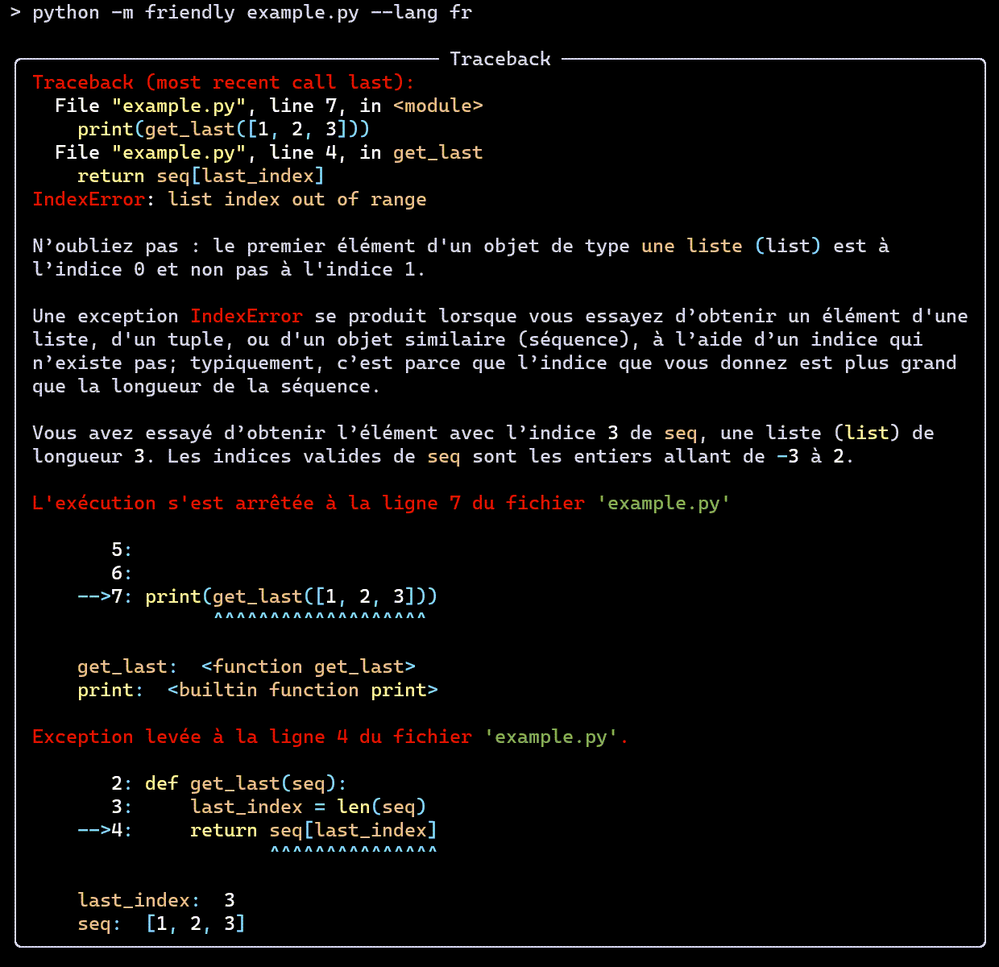

Bienvenue 환영합니다 Bienvenido - ようこそ Welcome 歡迎光臨¶
Friendly tracebacks - Simplified Python tracebacks translatable into any language.
Warning
This is pre-alpha software, currently in development. The API is subject to change without notice; such changes may not be included (yet) in this documentation.
In a nutshell¶
There exists many Python projects intended to supplement the information given by Python traceback to make them more useful for advanced programmers. Friendly-traceback is not one of these projects.
Friendly-traceback is aimed primarily at beginners and/or at users who would like to get information about traceback in their own language. Please, see the Design section for a complete description of the goals of this project. But for now, let’s have a quick look at a standard Python traceback when using the REPL.

Not exactly the most helpful information for beginners …
Here’s the corresponding version from Friendly-traceback’s REPL

The only thing that is shown in exactly the same way is the line showing the exception name and a message. Everything else can be made available in other languages.
{kind=link}
About the version¶
Typically, the version shown at the top will have the letter “a” at the end. This means that the latest update to the documentation was made after a release with a version number without the “a” was uploaded to Pypi, and that we are working towards the next release. As a result, some features shown here may be slightly different from the version available from Pypi.
Contents¶
- Usage
- Occasional lies
- Design
- Public API
- Custom exceptions and formatting
- Suggest an addition
- Adding an Exception
- Dealing with Syntax Errors
- Friendly tracebacks - Python 3.6 in English
- SyntaxError - Python 3.6 in English
- Friendly tracebacks - Python 3.7 in English
- SyntaxError - Python 3.7 in English
- Friendly tracebacks - Python 3.8 in English
- SyntaxError - Python 3.8 in English
- Friendly tracebacks - Python 3.7 en Français
- SyntaxError - Python 3.7 en Français
- Notes on translations - using gettext
- Comparison between versions
- Change Log
Todo
Explain why we do not install gettext globally.
(The original entry is located in C:\Users\andre\github\friendly-traceback-docs\docs\source\adding_exception.rst, line 218.)
Todo
Adding to an existing exception to be written
(The original entry is located in C:\Users\andre\github\friendly-traceback-docs\docs\source\adding_exception.rst, line 361.)
Todo
Additional optional steps to be written.
(The original entry is located in C:\Users\andre\github\friendly-traceback-docs\docs\source\adding_exception.rst, line 368.)
Todo
Adding to tb_common steps to be written.
(The original entry is located in C:\Users\andre\github\friendly-traceback-docs\docs\source\adding_exception.rst, line 375.)